Beyond the 83 Main Classes
4 Introductory Bridge Labs & 14 Pinned Upstream University Tutorials
In addition to the 83 main classes (R00–P04), the repository includes 4 executed introductory supplement labs (course/labs/) and 14 unmodified upstream tutorials from Dartmouth DartBrains, Stanford/Poldrack fmri-analysis-vm, Princeton/Yale BrainIAK, Neuromatch Academy, and Nipype (third_party/)—all rendered into readable web pages:
| Collection | Notebook / Tutorial | Source / Role | Read on Website | Download Raw |
|---|---|---|---|---|
course/labs | Lab 520: Experimental Design & GLM | Introductory Bridge Companion Lab | 📖 Read Web Page | ⬇ .ipynb |
course/labs | Lab 540: Image Processing & Coordinates | Introductory Bridge Companion Lab | 📖 Read Web Page | ⬇ .ipynb |
course/labs | Lab 550: Predictive Modeling & Validation | Introductory Bridge Companion Lab | 📖 Read Web Page | ⬇ .ipynb |
course/labs | Lab 580: Neuroimaging Data Science | Introductory Bridge Companion Lab | 📖 Read Web Page | ⬇ .ipynb |
third_party/processing | Nipype: Basic Workflow | Michael Notter & Nipype Tutorial (BSD-3) | 📖 Read Web Page | ⬇ .ipynb |
third_party/processing | Nipype: Basic Data Input (BIDS) | Michael Notter & Nipype Tutorial (BSD-3) | 📖 Read Web Page | ⬇ .ipynb |
third_party/processing | Nipype: Example Preprocessing Workflow | Michael Notter & Nipype Tutorial (BSD-3) | 📖 Read Web Page | ⬇ .ipynb |
third_party/processing | DartBrains: Preprocessing (Marimo .py) | Luke Chang & DartBrains (CC BY-SA 4.0) | 📖 Read Web Page | ⬇ .py |
third_party/design | Design Efficiency | Russ Poldrack · fmri-analysis-vm (MIT) | 📖 Read Web Page | ⬇ .ipynb |
third_party/design | Efficiency & Predictor Correlation | Russ Poldrack · fmri-analysis-vm (MIT) | 📖 Read Web Page | ⬇ .ipynb |
third_party/design | Resampling Statistics | Luke Chang · DartBrains (CC BY-SA 4.0) | 📖 Read Web Page | ⬇ .ipynb |
third_party/data_science | W1D2 Tutorial 1: Linear Regression & MSE | Neuromatch Academy (CC-BY 4.0 / BSD-3) | 📖 Read Web Page | ⬇ .ipynb |
third_party/data_science | W1D2 Tutorial 2: Multiple Regression & CV | Neuromatch Academy (CC-BY 4.0 / BSD-3) | 📖 Read Web Page | ⬇ .ipynb |
third_party/data_science | W1D4 Tutorial 1: Dimensionality Reduction & PCA | Neuromatch Academy (CC-BY 4.0 / BSD-3) | 📖 Read Web Page | ⬇ .ipynb |
third_party/modeling | BrainIAK Tutorial 06: Representational Similarity Analysis (RSA) | BrainIAK Princeton/Yale (Apache-2.0) | 📖 Read Web Page | ⬇ .ipynb |
third_party/modeling | BrainIAK Tutorial 10: Inter-Subject Correlation (ISC & ISFC) | BrainIAK Princeton/Yale (Apache-2.0) | 📖 Read Web Page | ⬇ .ipynb |
third_party/modeling | W3D3 Tutorial 2: Hidden Markov Models (HMM) | Neuromatch Academy (CC-BY 4.0 / BSD-3) | 📖 Read Web Page | ⬇ .ipynb |
third_party/modeling | W2D2 Tutorial 1: Convolutional Neural Networks (CNNs) | Neuromatch Academy Deep Learning (CC-BY 4.0) | 📖 Read Web Page | ⬇ .ipynb |
Visual Verification Suite (
course/verification/)All 22 Executed Supplement Verification Diagnostic Figures
Click any figure below to enlarge it in the interactive lightbox (or view the Verification Report):
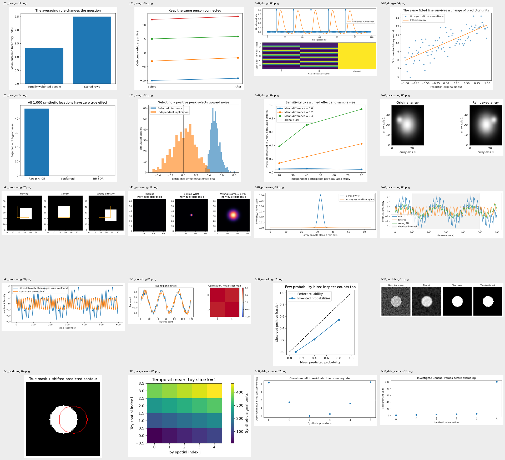
course/verification/contact_sheet.pngOpen full PNG
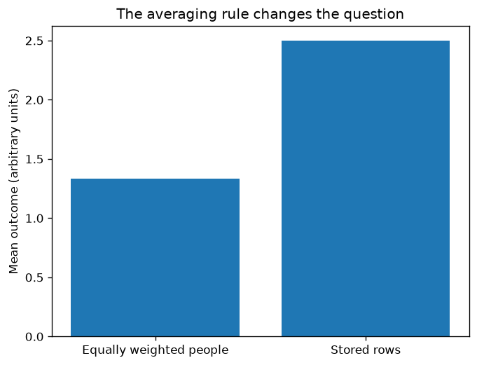
course/verification/plots/520_design-01.pngOpen full PNG
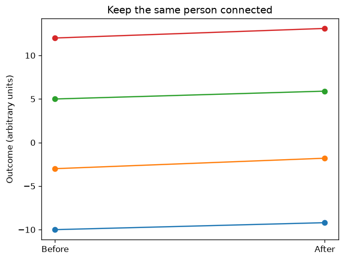
course/verification/plots/520_design-02.pngOpen full PNG
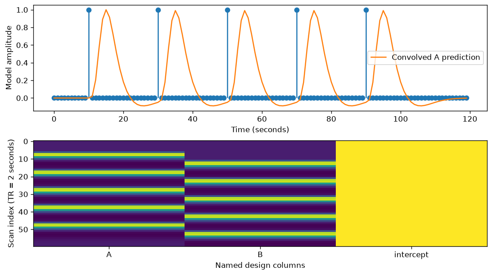
course/verification/plots/520_design-03.pngOpen full PNG
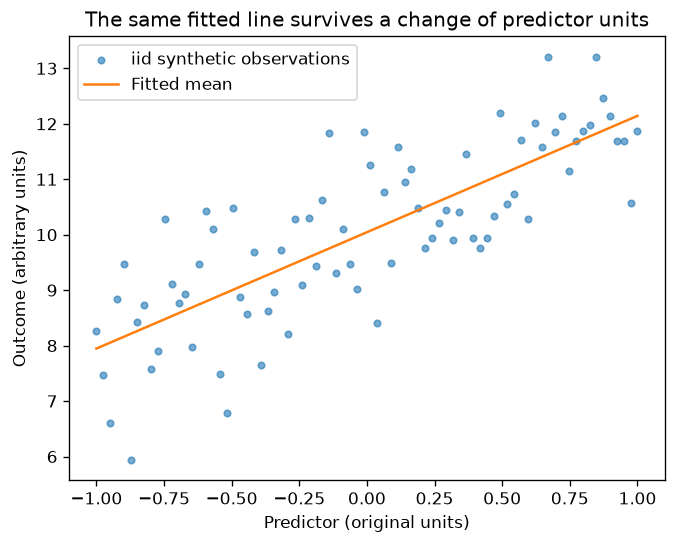
course/verification/plots/520_design-04.pngOpen full PNG
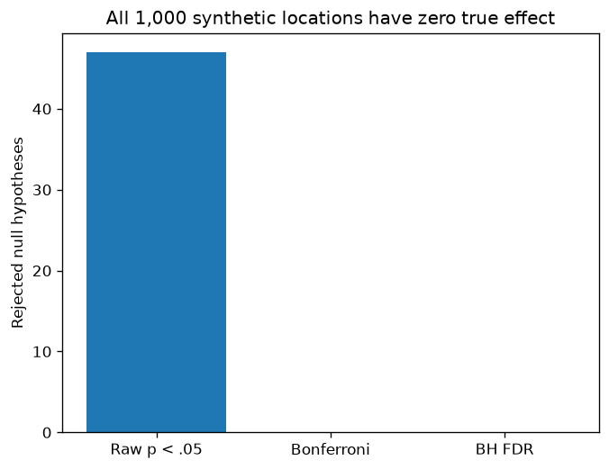
course/verification/plots/520_design-05.pngOpen full PNG
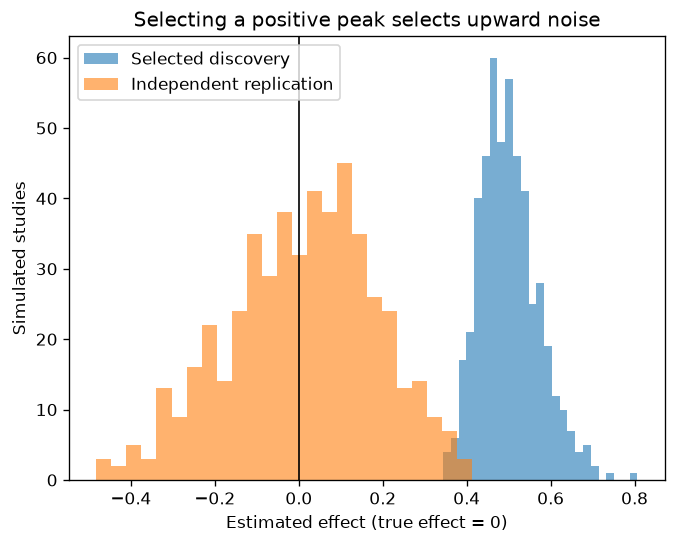
course/verification/plots/520_design-06.pngOpen full PNG
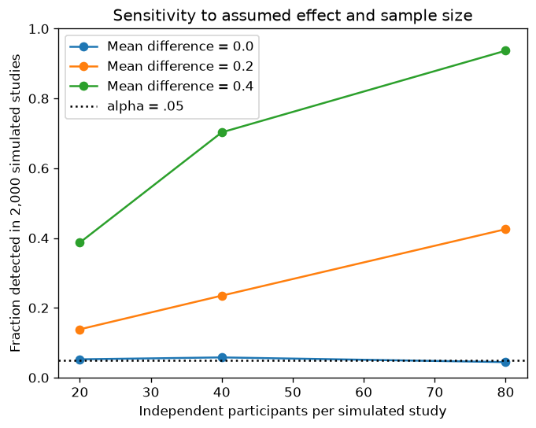
course/verification/plots/520_design-07.pngOpen full PNG
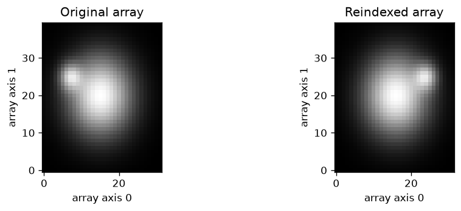
course/verification/plots/540_processing-01.pngOpen full PNG
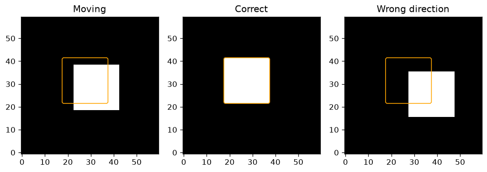
course/verification/plots/540_processing-02.pngOpen full PNG
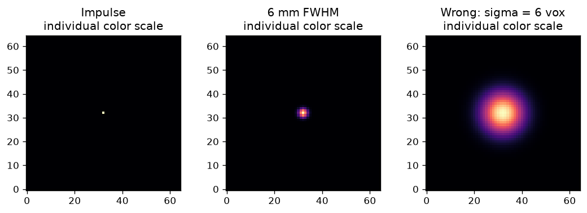
course/verification/plots/540_processing-03.pngOpen full PNG
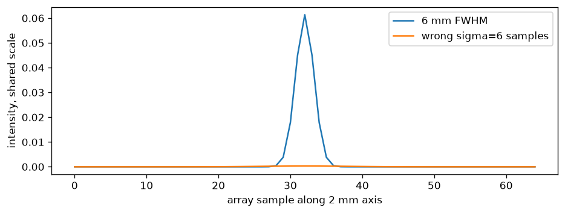
course/verification/plots/540_processing-04.pngOpen full PNG
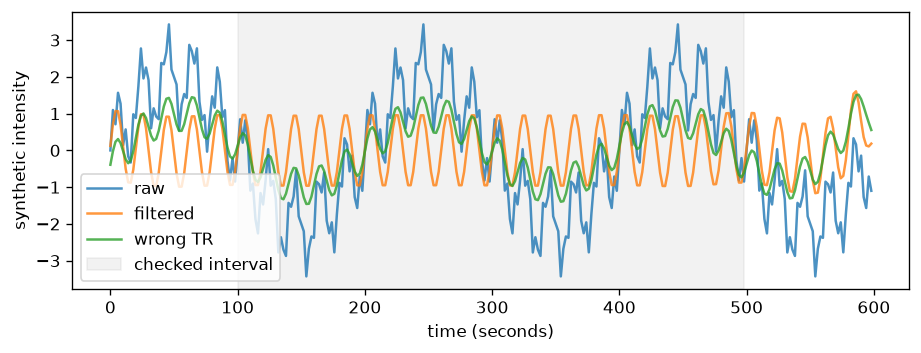
course/verification/plots/540_processing-05.pngOpen full PNG
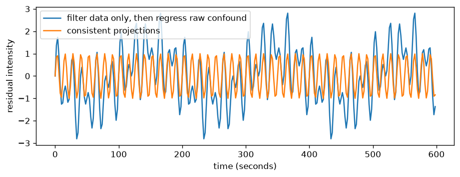
course/verification/plots/540_processing-06.pngOpen full PNG
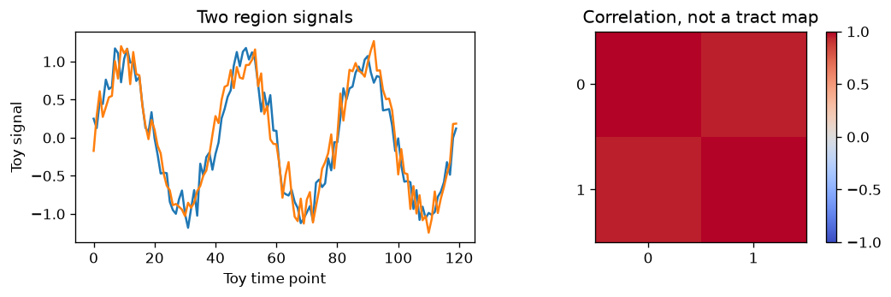
course/verification/plots/550_modeling-01.pngOpen full PNG
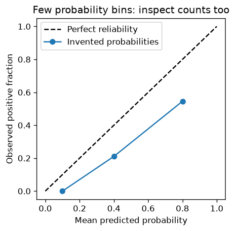
course/verification/plots/550_modeling-02.pngOpen full PNG
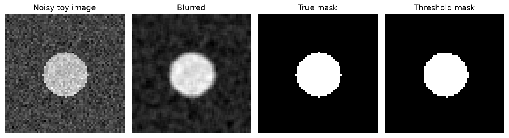
course/verification/plots/550_modeling-03.pngOpen full PNG
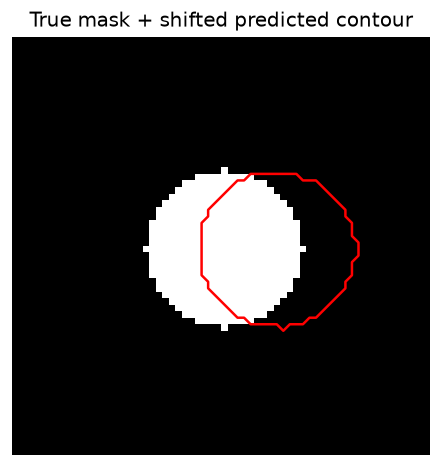
course/verification/plots/550_modeling-04.pngOpen full PNG
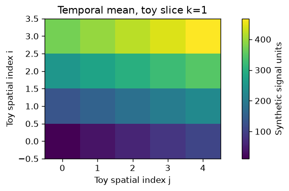
course/verification/plots/580_data_science-01.pngOpen full PNG
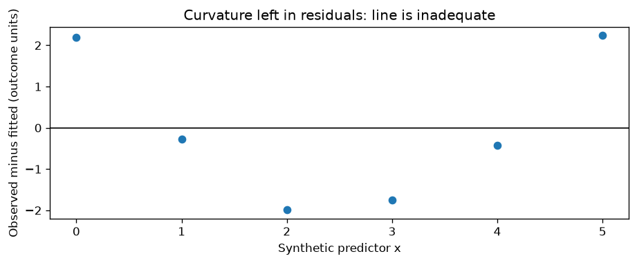
course/verification/plots/580_data_science-02.pngOpen full PNG
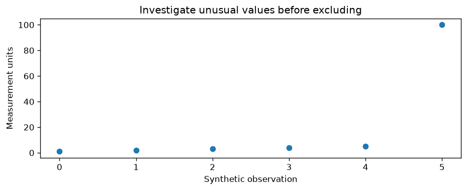
course/verification/plots/580_data_science-03.pngOpen full PNG
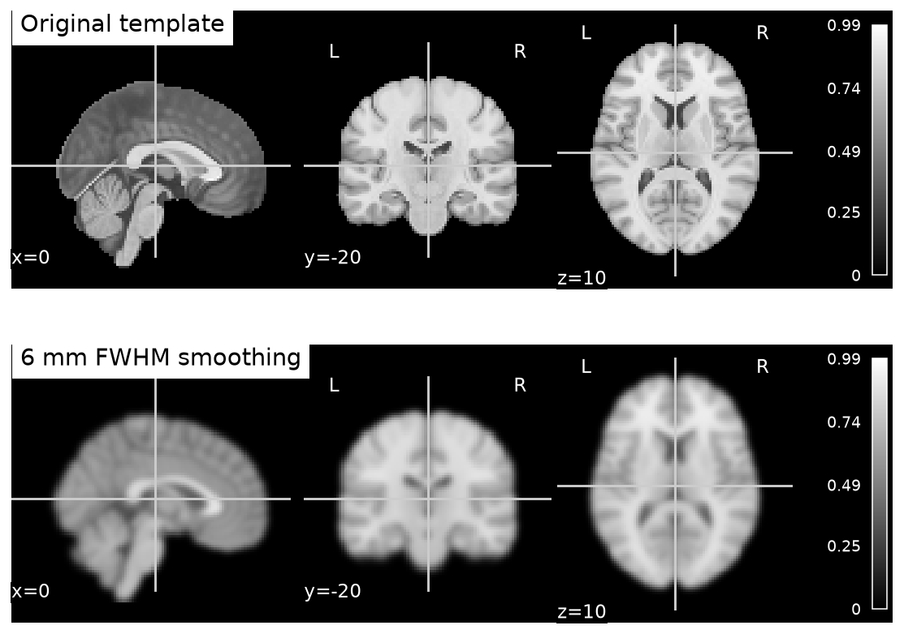
course/verification/real_template_demo.pngOpen full PNG
1. Main Graduate Curriculum Notebooks & Strand Indexes (`notebooks/` — 83 Classes + 5 Indexes) (88 files)
| Repository Path | Type | Size | Web View & Raw File Access |
|---|---|---|---|
notebooks/00_foundations/01_learning_contract.ipynb | .ipynb | 395.2 KB | 📖 Read Web Page ⬇ Raw (.ipynb) |
notebooks/00_foundations/02_measurement_bridge.ipynb | .ipynb | 352.2 KB | 📖 Read Web Page ⬇ Raw (.ipynb) |
notebooks/00_foundations/03_snippet_literacy.ipynb | .ipynb | 283.5 KB | 📖 Read Web Page ⬇ Raw (.ipynb) |
notebooks/00_foundations/04_notebook_environment.ipynb | .ipynb | 286.8 KB | 📖 Read Web Page ⬇ Raw (.ipynb) |
notebooks/00_foundations/index.json | .json | 0.7 KB | ⬇ Raw (.json) |
notebooks/00_paper_orientation/00_how_to_read.ipynb | .ipynb | 29.2 KB | 📖 Read Web Page ⬇ Raw (.ipynb) |
notebooks/00_paper_orientation/01_why_processing.ipynb | .ipynb | 27.1 KB | 📖 Read Web Page ⬇ Raw (.ipynb) |
notebooks/00_paper_orientation/02_why_generalization.ipynb | .ipynb | 28.5 KB | 📖 Read Web Page ⬇ Raw (.ipynb) |
notebooks/00_paper_orientation/03_why_evidence_audits.ipynb | .ipynb | 27.0 KB | 📖 Read Web Page ⬇ Raw (.ipynb) |
notebooks/00_paper_orientation/index.json | .json | 1.0 KB | ⬇ Raw (.json) |
notebooks/01_processing/01_images_coordinates_metadata.ipynb | .ipynb | 262.0 KB | 📖 Read Web Page ⬇ Raw (.ipynb) |
notebooks/01_processing/02_registration_resampling.ipynb | .ipynb | 339.8 KB | 📖 Read Web Page ⬇ Raw (.ipynb) |
notebooks/01_processing/03_nonlinear_warps.ipynb | .ipynb | 656.5 KB | 📖 Read Web Page ⬇ Raw (.ipynb) |
notebooks/01_processing/04_bias_field.ipynb | .ipynb | 414.9 KB | 📖 Read Web Page ⬇ Raw (.ipynb) |
notebooks/01_processing/05_brain_extraction.ipynb | .ipynb | 371.4 KB | 📖 Read Web Page ⬇ Raw (.ipynb) |
notebooks/01_processing/06_tissue_segmentation.ipynb | .ipynb | 300.2 KB | 📖 Read Web Page ⬇ Raw (.ipynb) |
notebooks/01_processing/07_morphometry_volume_jacobian.ipynb | .ipynb | 373.3 KB | 📖 Read Web Page ⬇ Raw (.ipynb) |
notebooks/01_processing/08_surfaces_topology.ipynb | .ipynb | 332.1 KB | 📖 Read Web Page ⬇ Raw (.ipynb) |
notebooks/01_processing/09_slice_timing.ipynb | .ipynb | 476.3 KB | 📖 Read Web Page ⬇ Raw (.ipynb) |
notebooks/01_processing/10_motion.ipynb | .ipynb | 401.0 KB | 📖 Read Web Page ⬇ Raw (.ipynb) |
notebooks/01_processing/11_susceptibility_distortion.ipynb | .ipynb | 553.0 KB | 📖 Read Web Page ⬇ Raw (.ipynb) |
notebooks/01_processing/12_spatial_smoothing.ipynb | .ipynb | 352.3 KB | 📖 Read Web Page ⬇ Raw (.ipynb) |
notebooks/01_processing/13_temporal_filters.ipynb | .ipynb | 448.3 KB | 📖 Read Web Page ⬇ Raw (.ipynb) |
notebooks/01_processing/14_nuisance_ica.ipynb | .ipynb | 501.1 KB | 📖 Read Web Page ⬇ Raw (.ipynb) |
notebooks/01_processing/15_qc_censoring.ipynb | .ipynb | 322.2 KB | 📖 Read Web Page ⬇ Raw (.ipynb) |
notebooks/01_processing/16_diffusion_gradients.ipynb | .ipynb | 456.7 KB | 📖 Read Web Page ⬇ Raw (.ipynb) |
notebooks/01_processing/17_diffusion_preprocessing.ipynb | .ipynb | 359.1 KB | 📖 Read Web Page ⬇ Raw (.ipynb) |
notebooks/01_processing/18_diffusion_tensor.ipynb | .ipynb | 381.5 KB | 📖 Read Web Page ⬇ Raw (.ipynb) |
notebooks/01_processing/19_crossing_fibers_tractography.ipynb | .ipynb | 377.7 KB | 📖 Read Web Page ⬇ Raw (.ipynb) |
notebooks/01_processing/20_parcellations_connectivity.ipynb | .ipynb | 448.4 KB | 📖 Read Web Page ⬇ Raw (.ipynb) |
notebooks/01_processing/21_workflow_provenance_reports.ipynb | .ipynb | 324.9 KB | 📖 Read Web Page ⬇ Raw (.ipynb) |
notebooks/01_processing/INDEX.json | .json | 4.9 KB | ⬇ Raw (.json) |
notebooks/02_design/01_questions_estimands_causality.ipynb | .ipynb | 279.9 KB | 📖 Read Web Page ⬇ Raw (.ipynb) |
notebooks/02_design/02_sampling_missingness_units.ipynb | .ipynb | 204.3 KB | 📖 Read Web Page ⬇ Raw (.ipynb) |
notebooks/02_design/03_reliability_measurement.ipynb | .ipynb | 336.3 KB | 📖 Read Web Page ⬇ Raw (.ipynb) |
notebooks/02_design/04_power_precision.ipynb | .ipynb | 280.3 KB | 📖 Read Web Page ⬇ Raw (.ipynb) |
notebooks/02_design/05_block_event_hrf.ipynb | .ipynb | 388.5 KB | 📖 Read Web Page ⬇ Raw (.ipynb) |
notebooks/02_design/06_fir_hrf_misspecification.ipynb | .ipynb | 361.9 KB | 📖 Read Web Page ⬇ Raw (.ipynb) |
notebooks/02_design/07_design_efficiency.ipynb | .ipynb | 316.9 KB | 📖 Read Web Page ⬇ Raw (.ipynb) |
notebooks/02_design/08_factorial_confounding.ipynb | .ipynb | 221.6 KB | 📖 Read Web Page ⬇ Raw (.ipynb) |
notebooks/02_design/09_glm_contrasts_inference.ipynb | .ipynb | 316.9 KB | 📖 Read Web Page ⬇ Raw (.ipynb) |
notebooks/02_design/10_temporal_noise_prewhitening.ipynb | .ipynb | 361.9 KB | 📖 Read Web Page ⬇ Raw (.ipynb) |
notebooks/02_design/11_group_hierarchy_repeated.ipynb | .ipynb | 387.6 KB | 📖 Read Web Page ⬇ Raw (.ipynb) |
notebooks/02_design/12_permutation_exchangeability.ipynb | .ipynb | 273.2 KB | 📖 Read Web Page ⬇ Raw (.ipynb) |
notebooks/02_design/13_multiplicity_clusters_tfce.ipynb | .ipynb | 337.8 KB | 📖 Read Web Page ⬇ Raw (.ipynb) |
notebooks/02_design/14_roi_selection_circularity.ipynb | .ipynb | 348.2 KB | 📖 Read Web Page ⬇ Raw (.ipynb) |
notebooks/02_design/15_bayesian_intervals_equivalence.ipynb | .ipynb | 320.2 KB | 📖 Read Web Page ⬇ Raw (.ipynb) |
notebooks/02_design/16_multiverse_prereg_reproducibility.ipynb | .ipynb | 315.3 KB | 📖 Read Web Page ⬇ Raw (.ipynb) |
notebooks/03_data_science/01_arrays_axes.ipynb | .ipynb | 235.6 KB | 📖 Read Web Page ⬇ Raw (.ipynb) |
notebooks/03_data_science/02_tables_identity.ipynb | .ipynb | 169.5 KB | 📖 Read Web Page ⬇ Raw (.ipynb) |
notebooks/03_data_science/03_nifti_io.ipynb | .ipynb | 199.5 KB | 📖 Read Web Page ⬇ Raw (.ipynb) |
notebooks/03_data_science/04_eda.ipynb | .ipynb | 227.6 KB | 📖 Read Web Page ⬇ Raw (.ipynb) |
notebooks/03_data_science/05_missingness.ipynb | .ipynb | 250.5 KB | 📖 Read Web Page ⬇ Raw (.ipynb) |
notebooks/03_data_science/06_probability.ipynb | .ipynb | 245.8 KB | 📖 Read Web Page ⬇ Raw (.ipynb) |
notebooks/03_data_science/07_sampling.ipynb | .ipynb | 255.8 KB | 📖 Read Web Page ⬇ Raw (.ipynb) |
notebooks/03_data_science/08_bootstrap.ipynb | .ipynb | 169.7 KB | 📖 Read Web Page ⬇ Raw (.ipynb) |
notebooks/03_data_science/09_standardization.ipynb | .ipynb | 264.4 KB | 📖 Read Web Page ⬇ Raw (.ipynb) |
notebooks/03_data_science/10_projections.ipynb | .ipynb | 247.9 KB | 📖 Read Web Page ⬇ Raw (.ipynb) |
notebooks/03_data_science/11_likelihood.ipynb | .ipynb | 234.0 KB | 📖 Read Web Page ⬇ Raw (.ipynb) |
notebooks/03_data_science/12_optimization.ipynb | .ipynb | 252.0 KB | 📖 Read Web Page ⬇ Raw (.ipynb) |
notebooks/03_data_science/13_regression_diagnostics.ipynb | .ipynb | 242.5 KB | 📖 Read Web Page ⬇ Raw (.ipynb) |
notebooks/03_data_science/14_pca_svd.ipynb | .ipynb | 202.4 KB | 📖 Read Web Page ⬇ Raw (.ipynb) |
notebooks/03_data_science/15_selection.ipynb | .ipynb | 292.7 KB | 📖 Read Web Page ⬇ Raw (.ipynb) |
notebooks/03_data_science/16_reproducibility.ipynb | .ipynb | 185.0 KB | 📖 Read Web Page ⬇ Raw (.ipynb) |
notebooks/03_data_science/index.json | .json | 5.6 KB | ⬇ Raw (.json) |
notebooks/04_modeling/01_representations_encoding_decoding.ipynb | .ipynb | 206.9 KB | 📖 Read Web Page ⬇ Raw (.ipynb) |
notebooks/04_modeling/02_regularized_linear_models.ipynb | .ipynb | 208.7 KB | 📖 Read Web Page ⬇ Raw (.ipynb) |
notebooks/04_modeling/03_kernels_ensembles.ipynb | .ipynb | 400.9 KB | 📖 Read Web Page ⬇ Raw (.ipynb) |
notebooks/04_modeling/04_nested_sites_harmonization.ipynb | .ipynb | 212.1 KB | 📖 Read Web Page ⬇ Raw (.ipynb) |
notebooks/04_modeling/05_pca_ica.ipynb | .ipynb | 273.0 KB | 📖 Read Web Page ⬇ Raw (.ipynb) |
notebooks/04_modeling/06_clustering_stability.ipynb | .ipynb | 257.9 KB | 📖 Read Web Page ⬇ Raw (.ipynb) |
notebooks/04_modeling/07_connectomes_graphs.ipynb | .ipynb | 221.7 KB | 📖 Read Web Page ⬇ Raw (.ipynb) |
notebooks/04_modeling/08_rsa_crossvalidated_distances.ipynb | .ipynb | 176.1 KB | 📖 Read Web Page ⬇ Raw (.ipynb) |
notebooks/04_modeling/09_searchlight.ipynb | .ipynb | 258.9 KB | 📖 Read Web Page ⬇ Raw (.ipynb) |
notebooks/04_modeling/10_naturalistic_isc_encoding.ipynb | .ipynb | 270.8 KB | 📖 Read Web Page ⬇ Raw (.ipynb) |
notebooks/04_modeling/11_generative_latent_models.ipynb | .ipynb | 255.7 KB | 📖 Read Web Page ⬇ Raw (.ipynb) |
notebooks/04_modeling/12_hmm_event_segmentation.ipynb | .ipynb | 242.0 KB | 📖 Read Web Page ⬇ Raw (.ipynb) |
notebooks/04_modeling/13_latent_dynamics_dcm.ipynb | .ipynb | 310.0 KB | 📖 Read Web Page ⬇ Raw (.ipynb) |
notebooks/04_modeling/14_cnn_backprop_training.ipynb | .ipynb | 170.9 KB | 📖 Read Web Page ⬇ Raw (.ipynb) |
notebooks/04_modeling/15_segmentation_losses.ipynb | .ipynb | 165.2 KB | 📖 Read Web Page ⬇ Raw (.ipynb) |
notebooks/04_modeling/16_selfsupervision_transfer.ipynb | .ipynb | 247.7 KB | 📖 Read Web Page ⬇ Raw (.ipynb) |
notebooks/04_modeling/17_attention_foundation_models.ipynb | .ipynb | 206.7 KB | 📖 Read Web Page ⬇ Raw (.ipynb) |
notebooks/04_modeling/18_calibration_explanation_reproducibility.ipynb | .ipynb | 188.9 KB | 📖 Read Web Page ⬇ Raw (.ipynb) |
notebooks/05_projects/01_anatomical_workflow.ipynb | .ipynb | 362.4 KB | 📖 Read Web Page ⬇ Raw (.ipynb) |
notebooks/05_projects/02_real_fmri_glm.ipynb | .ipynb | 453.7 KB | 📖 Read Web Page ⬇ Raw (.ipynb) |
notebooks/05_projects/03_cohort_generalization.ipynb | .ipynb | 314.7 KB | 📖 Read Web Page ⬇ Raw (.ipynb) |
notebooks/05_projects/04_research_defense.ipynb | .ipynb | 292.5 KB | 📖 Read Web Page ⬇ Raw (.ipynb) |
notebooks/05_projects/index.json | .json | 0.7 KB | ⬇ Raw (.json) |
2. Curriculum Guides, Coursework Rubrics, Paper Library & Validation Records (`curriculum/`) (41 files)
| Repository Path | Type | Size | Web View & Raw File Access |
|---|---|---|---|
curriculum/AI_WORKFLOW.md | .md | 11.5 KB | 📖 Read Web Page ⬇ Raw (.md) |
curriculum/ASSESSMENT.md | .md | 4.8 KB | 📖 Read Web Page ⬇ Raw (.md) |
curriculum/COVERAGE_AUDIT.md | .md | 5.4 KB | 📖 Read Web Page ⬇ Raw (.md) |
curriculum/NOTEBOOK_INDEX.md | .md | 17.1 KB | 📖 Read Web Page ⬇ Raw (.md) |
curriculum/SETUP.md | .md | 14.8 KB | 📖 Read Web Page ⬇ Raw (.md) |
curriculum/SOURCES.md | .md | 8.8 KB | 📖 Read Web Page ⬇ Raw (.md) |
curriculum/STUDY_PLAN.md | .md | 9.5 KB | 📖 Read Web Page ⬇ Raw (.md) |
curriculum/VERIFICATION.md | .md | 7.5 KB | 📖 Read Web Page ⬇ Raw (.md) |
curriculum/agentic_guides.json | .json | 203.5 KB | ⬇ Raw (.json) |
curriculum/course_enrichment.json | .json | 260.4 KB | ⬇ Raw (.json) |
curriculum/coursework/EVIDENCE_LEDGER.md | .md | 2.2 KB | 📖 Read Web Page ⬇ Raw (.md) |
curriculum/coursework/PAPER_TO_EXPERIMENT.md | .md | 7.6 KB | 📖 Read Web Page ⬇ Raw (.md) |
curriculum/coursework/SOTA_AUDIT.md | .md | 5.0 KB | 📖 Read Web Page ⬇ Raw (.md) |
curriculum/data_science_coverage.md | .md | 8.1 KB | 📖 Read Web Page ⬇ Raw (.md) |
curriculum/design_coverage.md | .md | 13.4 KB | 📖 Read Web Page ⬇ Raw (.md) |
curriculum/design_validation.json | .json | 4.8 KB | ⬇ Raw (.json) |
curriculum/modeling_coverage.md | .md | 20.0 KB | 📖 Read Web Page ⬇ Raw (.md) |
curriculum/modeling_notebook_inventory.json | .json | 12.0 KB | ⬇ Raw (.json) |
curriculum/modeling_verification.json | .json | 6.7 KB | ⬇ Raw (.json) |
curriculum/notebook_index.json | .json | 19.9 KB | ⬇ Raw (.json) |
curriculum/paper_update_validation.json | .json | 2.2 KB | ⬇ Raw (.json) |
curriculum/papers/READING_METHOD.md | .md | 5.8 KB | 📖 Read Web Page ⬇ Raw (.md) |
curriculum/papers/README.md | .md | 13.8 KB | 📖 Read Web Page ⬇ Raw (.md) |
curriculum/papers/REFERENCES.md | .md | 259.6 KB | 📖 Read Web Page ⬇ Raw (.md) |
curriculum/papers/design.md | .md | 24.9 KB | 📖 Read Web Page ⬇ Raw (.md) |
curriculum/papers/design_sources.json | .json | 10.6 KB | ⬇ Raw (.json) |
curriculum/papers/key_references.json | .json | 270.5 KB | ⬇ Raw (.json) |
curriculum/papers/lesson_readings.json | .json | 16.3 KB | ⬇ Raw (.json) |
curriculum/papers/measurement.md | .md | 4.2 KB | 📖 Read Web Page ⬇ Raw (.md) |
curriculum/papers/measurement_sources.json | .json | 1.0 KB | ⬇ Raw (.json) |
curriculum/papers/modeling.md | .md | 28.7 KB | 📖 Read Web Page ⬇ Raw (.md) |
curriculum/papers/modeling_sources.json | .json | 14.3 KB | ⬇ Raw (.json) |
curriculum/papers/paper_registry.json | .json | 44.8 KB | ⬇ Raw (.json) |
curriculum/papers/processing.md | .md | 29.6 KB | 📖 Read Web Page ⬇ Raw (.md) |
curriculum/papers/processing_sources.json | .json | 14.1 KB | ⬇ Raw (.json) |
curriculum/papers/reference_verification.json | .json | 162.4 KB | ⬇ Raw (.json) |
curriculum/processing_coverage.md | .md | 19.3 KB | 📖 Read Web Page ⬇ Raw (.md) |
curriculum/processing_verification.json | .json | 7.5 KB | ⬇ Raw (.json) |
curriculum/real_fmri_run.json | .json | 0.5 KB | ⬇ Raw (.json) |
curriculum/uv_validation.json | .json | 1.0 KB | ⬇ Raw (.json) |
curriculum/validation.json | .json | 22.7 KB | ⬇ Raw (.json) |
3. Introductory Bridge Coursebook, Lessons, 4 Supplement Labs, Templates & 22 Verification Plots (`course/`) (60 files)
| Repository Path | Type | Size | Web View & Raw File Access |
|---|---|---|---|
course/.goosehints | file | 0.8 KB | ⬇ Raw (.goosehints) |
course/ASSESSMENT.md | .md | 1.7 KB | 📖 Read Web Page ⬇ Raw (.md) |
course/COURSEBOOK.html | .html | 207.8 KB | 📖 Open HTML ⬇ Raw (.html) |
course/COURSEBOOK.md | .md | 174.2 KB | 📖 Read Web Page ⬇ Raw (.md) |
course/GLOSSARY.md | .md | 2.7 KB | 📖 Read Web Page ⬇ Raw (.md) |
course/README.md | .md | 5.9 KB | 📖 Read Web Page ⬇ Raw (.md) |
course/REAL_DATA.md | .md | 5.2 KB | 📖 Read Web Page ⬇ Raw (.md) |
course/SETUP.md | .md | 7.2 KB | 📖 Read Web Page ⬇ Raw (.md) |
course/SOURCES.md | .md | 5.1 KB | 📖 Read Web Page ⬇ Raw (.md) |
course/TRANSFORMATIONS.md | .md | 4.0 KB | 📖 Read Web Page ⬇ Raw (.md) |
course/answer_keys/520.md | .md | 4.2 KB | 📖 Read Web Page ⬇ Raw (.md) |
course/labs/520_design.html | .html | 364.5 KB | 📖 Open HTML ⬇ Raw (.html) |
course/labs/520_design.ipynb | .ipynb | 361.4 KB | 📖 Read Web Page ⬇ Raw (.ipynb) |
course/labs/540_processing.html | .html | 435.1 KB | 📖 Open HTML ⬇ Raw (.html) |
course/labs/540_processing.ipynb | .ipynb | 431.7 KB | 📖 Read Web Page ⬇ Raw (.ipynb) |
course/labs/550_modeling.html | .html | 224.5 KB | 📖 Open HTML ⬇ Raw (.html) |
course/labs/550_modeling.ipynb | .ipynb | 222.1 KB | 📖 Read Web Page ⬇ Raw (.ipynb) |
course/labs/580_data_science.html | .html | 116.3 KB | 📖 Open HTML ⬇ Raw (.html) |
course/labs/580_data_science.ipynb | .ipynb | 112.3 KB | 📖 Read Web Page ⬇ Raw (.ipynb) |
course/lessons/00_bridge.md | .md | 6.8 KB | 📖 Read Web Page ⬇ Raw (.md) |
course/lessons/520.md | .md | 24.3 KB | 📖 Read Web Page ⬇ Raw (.md) |
course/lessons/540.md | .md | 27.0 KB | 📖 Read Web Page ⬇ Raw (.md) |
course/lessons/550.md | .md | 28.1 KB | 📖 Read Web Page ⬇ Raw (.md) |
course/lessons/580.md | .md | 18.1 KB | 📖 Read Web Page ⬇ Raw (.md) |
course/lessons/90_capstone.md | .md | 4.4 KB | 📖 Read Web Page ⬇ Raw (.md) |
course/requirements-tested.txt | .txt | 2.0 KB | ⬇ Raw (.txt) |
course/requirements.txt | .txt | 0.2 KB | ⬇ Raw (.txt) |
course/sources/520.md | .md | 6.4 KB | 📖 Read Web Page ⬇ Raw (.md) |
course/sources/540.md | .md | 6.4 KB | 📖 Read Web Page ⬇ Raw (.md) |
course/sources/550.md | .md | 7.2 KB | 📖 Read Web Page ⬇ Raw (.md) |
course/sources/580.md | .md | 2.0 KB | 📖 Read Web Page ⬇ Raw (.md) |
course/templates/analysis_record.md | .md | 0.8 KB | 📖 Read Web Page ⬇ Raw (.md) |
course/templates/project_plan.md | .md | 0.8 KB | 📖 Read Web Page ⬇ Raw (.md) |
course/templates/transformation_card.md | .md | 0.8 KB | 📖 Read Web Page ⬇ Raw (.md) |
course/verification/REPORT.md | .md | 3.5 KB | 📖 Read Web Page ⬇ Raw (.md) |
course/verification/build_reading_editions.py | .py | 18.1 KB | ⬇ Raw (.py) |
course/verification/contact_sheet.png | .png | 535.6 KB | 🖼 View Plot ⬇ Raw (.png) |
course/verification/plots/520_design-01.png | .png | 21.0 KB | 🖼 View Plot ⬇ Raw (.png) |
course/verification/plots/520_design-02.png | .png | 21.2 KB | 🖼 View Plot ⬇ Raw (.png) |
course/verification/plots/520_design-03.png | .png | 59.5 KB | 🖼 View Plot ⬇ Raw (.png) |
course/verification/plots/520_design-04.png | .png | 42.6 KB | 🖼 View Plot ⬇ Raw (.png) |
course/verification/plots/520_design-05.png | .png | 21.5 KB | 🖼 View Plot ⬇ Raw (.png) |
course/verification/plots/520_design-06.png | .png | 30.6 KB | 🖼 View Plot ⬇ Raw (.png) |
course/verification/plots/520_design-07.png | .png | 53.3 KB | 🖼 View Plot ⬇ Raw (.png) |
course/verification/plots/540_processing-01.png | .png | 25.1 KB | 🖼 View Plot ⬇ Raw (.png) |
course/verification/plots/540_processing-02.png | .png | 18.4 KB | 🖼 View Plot ⬇ Raw (.png) |
course/verification/plots/540_processing-03.png | .png | 24.2 KB | 🖼 View Plot ⬇ Raw (.png) |
course/verification/plots/540_processing-04.png | .png | 30.2 KB | 🖼 View Plot ⬇ Raw (.png) |
course/verification/plots/540_processing-05.png | .png | 105.3 KB | 🖼 View Plot ⬇ Raw (.png) |
course/verification/plots/540_processing-06.png | .png | 99.4 KB | 🖼 View Plot ⬇ Raw (.png) |
course/verification/plots/550_modeling-01.png | .png | 56.6 KB | 🖼 View Plot ⬇ Raw (.png) |
course/verification/plots/550_modeling-02.png | .png | 39.6 KB | 🖼 View Plot ⬇ Raw (.png) |
course/verification/plots/550_modeling-03.png | .png | 36.1 KB | 🖼 View Plot ⬇ Raw (.png) |
course/verification/plots/550_modeling-04.png | .png | 9.9 KB | 🖼 View Plot ⬇ Raw (.png) |
course/verification/plots/580_data_science-01.png | .png | 26.7 KB | 🖼 View Plot ⬇ Raw (.png) |
course/verification/plots/580_data_science-02.png | .png | 22.4 KB | 🖼 View Plot ⬇ Raw (.png) |
course/verification/plots/580_data_science-03.png | .png | 21.1 KB | 🖼 View Plot ⬇ Raw (.png) |
course/verification/real_template_demo.png | .png | 91.7 KB | 🖼 View Plot ⬇ Raw (.png) |
course/verification/results.json | .json | 1.2 KB | ⬇ Raw (.json) |
course/verification/verify_course.py | .py | 5.2 KB | ⬇ Raw (.py) |
4. Pinned Upstream University Tutorials & Provenance Records (`third_party/`) (37 files)
| Repository Path | Type | Size | Web View & Raw File Access |
|---|---|---|---|
third_party/README.md | .md | 2.3 KB | 📖 Read Web Page ⬇ Raw (.md) |
third_party/data_science/LICENSE-CODE.md | .md | 1.4 KB | 📖 Read Web Page ⬇ Raw (.md) |
third_party/data_science/LICENSE.md | .md | 18.2 KB | 📖 Read Web Page ⬇ Raw (.md) |
third_party/data_science/README.md | .md | 1.2 KB | 📖 Read Web Page ⬇ Raw (.md) |
third_party/data_science/W1D2_Tutorial1.ipynb | .ipynb | 29.4 KB | 📖 Read Web Page ⬇ Raw (.ipynb) |
third_party/data_science/W1D2_Tutorial2.ipynb | .ipynb | 30.4 KB | 📖 Read Web Page ⬇ Raw (.ipynb) |
third_party/data_science/W1D4_Tutorial1.ipynb | .ipynb | 43.4 KB | 📖 Read Web Page ⬇ Raw (.ipynb) |
third_party/data_science/manifest.json | .json | 3.0 KB | ⬇ Raw (.json) |
third_party/design/README.md | .md | 3.7 KB | 📖 Read Web Page ⬇ Raw (.md) |
third_party/design/dartbrains/LICENSE_NOTICE.md | .md | 0.5 KB | 📖 Read Web Page ⬇ Raw (.md) |
third_party/design/dartbrains/_toc.yml | .yml | 1.5 KB | ⬇ Raw (.yml) |
third_party/design/dartbrains/content/Resampling_Statistics.ipynb | .ipynb | 251.2 KB | 📖 Read Web Page ⬇ Raw (.ipynb) |
third_party/design/dartbrains/content/Syllabus.md | .md | 11.2 KB | 📖 Read Web Page ⬇ Raw (.md) |
third_party/design/dartbrains/content/intro.md | .md | 3.2 KB | 📖 Read Web Page ⬇ Raw (.md) |
third_party/design/fmri-analysis-vm/LICENSE | file | 1.1 KB | ⬇ Raw (LICENSE) |
third_party/design/fmri-analysis-vm/analysis/efficiency/DesignEfficiency.ipynb | .ipynb | 192.9 KB | 📖 Read Web Page ⬇ Raw (.ipynb) |
third_party/design/fmri-analysis-vm/analysis/efficiency/EfficiencyCorrelation.ipynb | .ipynb | 15.1 KB | 📖 Read Web Page ⬇ Raw (.ipynb) |
third_party/design/manifest.json | .json | 2.3 KB | ⬇ Raw (.json) |
third_party/modeling/README.md | .md | 5.1 KB | 📖 Read Web Page ⬇ Raw (.md) |
third_party/modeling/brainiak-tutorials/LICENSE | file | 11.1 KB | ⬇ Raw (LICENSE) |
third_party/modeling/brainiak-tutorials/tutorials/06-rsa.ipynb | .ipynb | 33.9 KB | 📖 Read Web Page ⬇ Raw (.ipynb) |
third_party/modeling/brainiak-tutorials/tutorials/10-isc.ipynb | .ipynb | 39.7 KB | 📖 Read Web Page ⬇ Raw (.ipynb) |
third_party/modeling/course-content-dl/LICENSE-CODE.md | .md | 1.4 KB | 📖 Read Web Page ⬇ Raw (.md) |
third_party/modeling/course-content-dl/LICENSE.md | .md | 18.2 KB | 📖 Read Web Page ⬇ Raw (.md) |
third_party/modeling/course-content-dl/tutorials/W2D2_Convnets/student/W2D2_Tutorial1.ipynb | .ipynb | 145.0 KB | 📖 Read Web Page ⬇ Raw (.ipynb) |
third_party/modeling/course-content/LICENSE-CODE.md | .md | 1.4 KB | 📖 Read Web Page ⬇ Raw (.md) |
third_party/modeling/course-content/LICENSE.md | .md | 18.2 KB | 📖 Read Web Page ⬇ Raw (.md) |
third_party/modeling/course-content/tutorials/W3D3_HiddenDynamics/student/W3D3_Tutorial2.ipynb | .ipynb | 64.1 KB | 📖 Read Web Page ⬇ Raw (.ipynb) |
third_party/modeling/sources_manifest.json | .json | 18.9 KB | ⬇ Raw (.json) |
third_party/processing/DartBrains_Preprocessing.py | .py | 31.7 KB | 📖 Read Web Page ⬇ Raw (.py) |
third_party/processing/LICENSE.CC-BY-SA-4.0.txt | .txt | 17.9 KB | ⬇ Raw (.txt) |
third_party/processing/LICENSE.nipype_tutorial.txt | .txt | 1.5 KB | ⬇ Raw (.txt) |
third_party/processing/PROVENANCE.json | .json | 4.0 KB | ⬇ Raw (.json) |
third_party/processing/README.md | .md | 4.1 KB | 📖 Read Web Page ⬇ Raw (.md) |
third_party/processing/basic_data_input_bids.ipynb | .ipynb | 13.1 KB | 📖 Read Web Page ⬇ Raw (.ipynb) |
third_party/processing/basic_workflow.ipynb | .ipynb | 33.9 KB | 📖 Read Web Page ⬇ Raw (.ipynb) |
third_party/processing/example_preprocessing.ipynb | .ipynb | 19.0 KB | 📖 Read Web Page ⬇ Raw (.ipynb) |
5. Build/Verification Scripts, Root Documentation, Licenses & Environment Lockfiles (24 files)
| Repository Path | Type | Size | Web View & Raw File Access |
|---|---|---|---|
.github/workflows/notebooks.yml | .yml | 0.6 KB | ⬇ Raw (.yml) |
.github/workflows/pages.yml | .yml | 2.5 KB | ⬇ Raw (.yml) |
.gitignore | file | 0.1 KB | ⬇ Raw (.gitignore) |
.goosehints | file | 2.4 KB | ⬇ Raw (.goosehints) |
.python-version | file | 0.0 KB | ⬇ Raw (.python-version) |
LICENSE | file | 0.8 KB | ⬇ Raw (LICENSE) |
LICENSES/CC-BY-SA-4.0.txt | .txt | 17.9 KB | ⬇ Raw (.txt) |
LICENSES/MIT.txt | .txt | 1.1 KB | ⬇ Raw (.txt) |
README.md | .md | 14.5 KB | 📖 Read Web Page ⬇ Raw (.md) |
THIRD_PARTY_NOTICES.md | .md | 5.4 KB | 📖 Read Web Page ⬇ Raw (.md) |
pyproject.toml | .toml | 0.5 KB | ⬇ Raw (.toml) |
requirements-tested.txt | .txt | 2.0 KB | ⬇ Raw (.txt) |
requirements.txt | .txt | 0.2 KB | ⬇ Raw (.txt) |
scripts/build_reading_indexes.py | .py | 16.1 KB | ⬇ Raw (.py) |
scripts/build_website.py | .py | 80.4 KB | ⬇ Raw (.py) |
scripts/check_repository.py | .py | 12.1 KB | ⬇ Raw (.py) |
scripts/enrichment_part1.py | .py | 117.5 KB | ⬇ Raw (.py) |
scripts/enrichment_part2.py | .py | 100.4 KB | ⬇ Raw (.py) |
scripts/equation_decomposer.py | .py | 32.0 KB | ⬇ Raw (.py) |
scripts/site_theme.py | .py | 33.4 KB | ⬇ Raw (.py) |
scripts/validate_notebooks.py | .py | 5.4 KB | ⬇ Raw (.py) |
scripts/verify_references.py | .py | 7.9 KB | ⬇ Raw (.py) |
setup.sh | .sh | 4.9 KB | ⬇ Raw (.sh) |
uv.lock | .lock | 321.0 KB | ⬇ Raw (.lock) |